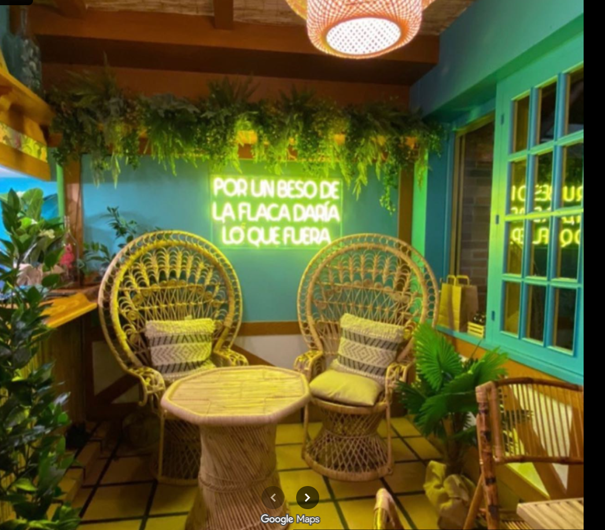
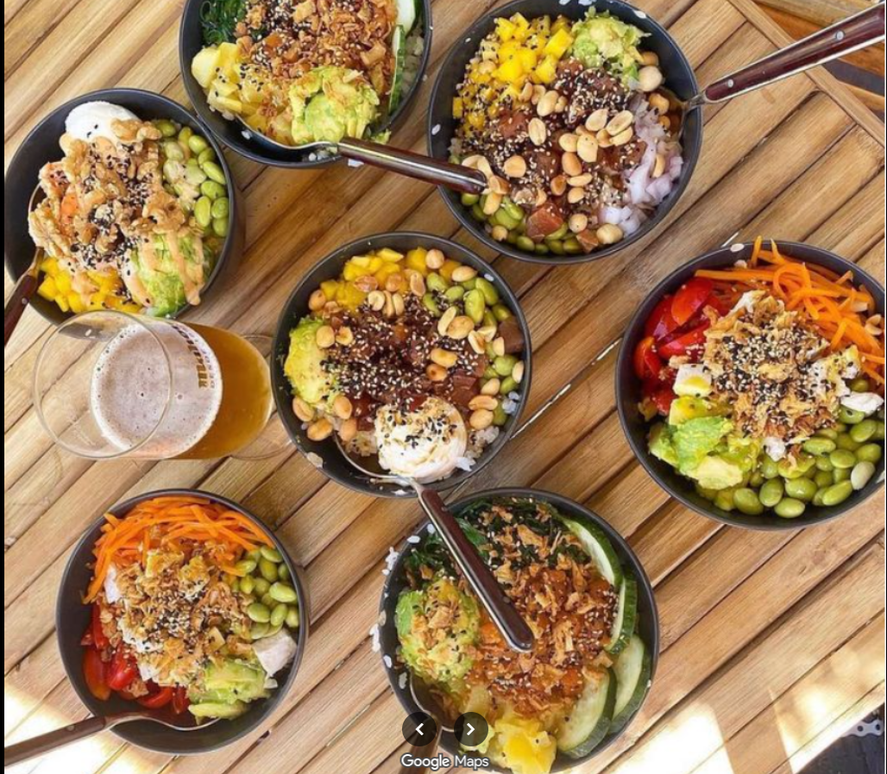
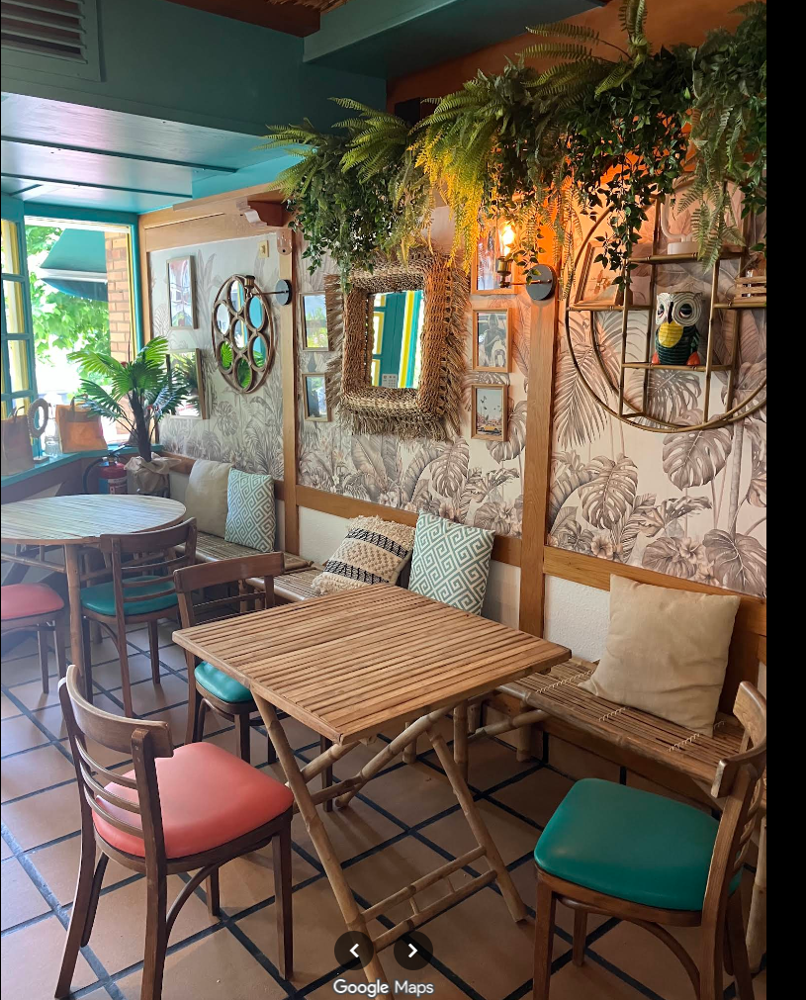

Salmón
Del mar- Arroz de sushi
- Salmón
- Piña
- Aguacate
- Wakame
- Pepino
- Cebolla crujiente
- Salsa La Flaca

Poke bar en el corazón de Laredo. Bowls frescos, hechos al momento, en un rincón de selva tropical frente a la playa.
Cada bowl se monta delante de ti: arroz de sushi recién hecho, pescado del día, verdura crujiente y nuestras salsas de la casa. Sin prisa, sin complicaciones — solo ingredientes buenos y un sitio bonito donde disfrutarlos.

¡recién hechos!Elige el tamaño y monta tu bowl paso a paso. Te enseñamos qué entra en cada uno — luego solo tienes que pedírnoslo en el local.
Mimbre, plantas por todas partes, baldosa de toda la vida y ese neón que ya es de la familia. Un sitio para quedarse.
